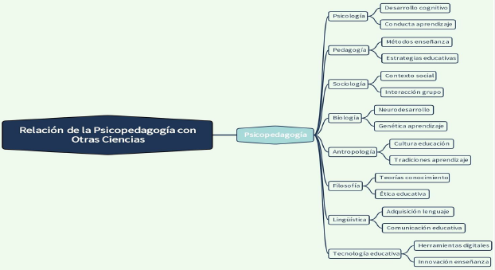

5 UNIDAD I: PSICOPEDAGOGÍA Y EDUCACIÓN
⮚ Objetivo 1. Explorar la relación que existe entre la psicopedagogía y el campo educativo.
⮚ Objetivo 2. Determinar los aspectos específicos de la enseñanza y aprendizaje que son objeto de estudio de la Psicopedagogía
⮚ Objetivo 3. Conocer las posibilidades de la Psicopedagogía dentro del campo de la educación, el campo clínico y la comunidad.
⮚ Objetivo 4. Explicar las funciones y responsabilidades de los responsables de las Unidades de Apoyo a la Inclusión (UDAI) y su relación con los Departamentos de Consejería Estudiantil (DECE) y los docentes de apoyo a la inclusión en nuestro contexto educativo.
5.1 Definición de Psicopedagogía y Educación.
Psicopedagogía:
“Se refiere a una especialización psicológica y pedagógica, cuya acción concreta consiste, principalmente, en la aplicación de los conocimientos derivados de ambas ciencias a problemas concretos que surgen en el campo de la educación” (Valdivieso, 2009).
Educación:
Definición nominal y vinculada a la finalidad:
“Adquirir en el proceso de intervención un conjunto de conductas que capacitan al educando para decidir y realizar su proyecto personal de vida y construirse a sí mismo, utilizando la experiencia axiológica para dar respuesta, de acuerdo con las oportunidades” (López 2021).
Definición nominal vinculada a la actividad:
“tiene la finalidad de educar y ajusta el significado a los criterios de uso común del término, igual que cualquier otra entidad que se defina nominalmente y sea comprensible” (López, 2021).
5.1.1 Relación de la Psicopedagogía con la Educación
Educación Conductas
Lenguaje, estilos de aprendizaje, desarrollo de destrezas, manejo de emociones, pensamiento,
Psicopedagogía
5.1.2 ¿De qué ciencias se fortalece la Psicopedagogía?

Psicología: Desarrollo cognitivo, Conducta aprendizaje
Pedagogía: Métodos enseñanza, Estrategias educativas.
Sociología: Contexto social, Interacción grupo.
Biología: Neurodesarrollo, Genética aprendizaje.
Antropología: Cultura educación, Tradiciones aprendizaje.
Filosofía: Teorías conocimiento, Etica educativa.
Lingüística: Adquisición lenguaje, Comunicación educativa.
Tecnología educativa: Herramientas digitales, Innovación enseñanza.
5.2 Objeto de la Psicopedagogía.
La psicopedagogía diferencia un objeto real y un objeto construido. El objeto real es el ser humano construido en un contexto socio-histórico cultural- EL objeto construido que es ese mismo ser humano, pero desde una mirada de ser aprendiente.
El objeto de psicopedagogía es el sujeto aprendiente: se encuentra en constante proceso de aprendizaje, es permanente, individual, colectivo y autónomo. (Azar, 2017).
5.2.1 El Sujeto Aprendiente
| Continuo Aprendizaje | Individual |
| Construye e incorpora el conocimiento. Existe una transmisión que permite aprehender de un “otro”. | Involucra a su ser desde su contexto bio -psico - social y espiritual. El aprendizaje se construye en un entramado que contempla aspectos subjetivos, cognitivos. sociales y orgánicos. |
5.4 Orientación escolar: UDAI, DECE y Pedagogo de apoyo.
Orientación Escolar
Jacobson & Reavis, citado por Vital (1976) considera a la orientación como un servicio dirigido a ayudar a los alumnos para que seleccionen inteligentemente, entre varias alternativas, la que se corresponda con sus habilidades, potencialidades y limitaciones. En la misma línea de quiénes sostienen la toma de decisiones como el centro y objeto de orientación, Johnston (1977:18) expresa: “la orientación es la ayuda que se presta a las personas para que resuelvan sus problemas y tomen decisiones prudentes.
5.4.1 Definiciones de Orientación según el objetivo y función
| DEFINICION | OBJETIVO | FUNCIONES |
|---|---|---|
| Servicio dirigido a ayudar a los alumnos para que seleccione inteligentemente entre varias alternativas las que se correspondan con sus habilidades (Jacobson & Reavis, 1976) | Ayudar a la toma de decisiones vocacionales. | Asesoramiento para la toma de decisiones. |
| Ayuda que se presta a las personas para que resuelvan sus problemas y tomen decisiones prudentes (Johnston, 1977) | Ayudar la toma de decisiones. Orientar en la resolución de problemas. | Asistencia para la toma de decisiones. |
| Proceso de asistencia al individuo para se oriente en sus estudios y progrese en la elección de los mismos (Martínez, 1980) | Ayudar la toma de decisiones. | Asistencia al alumno para que progrese en los estudios. |
| Proceso sistemático de ayuda, dirigida a todas las personas en período formativo, de desempeño profesional y de tiempo libre, con la finalidad de desarrollar en ellas aquellas conductas vocacionales que les preparen para la vida adulta, mediante una intervención continuada y técnica, basada en los principios de prevención, desarrollo e intervención social con la implicación de los agentes educativos y socioprofesionales” (Álvarez, 1995) | Ayudar a los sujetos en formación a la toma de decisiones. Preparar al individuo para la vida adulta. Guiar al sujeto mediante la prevención, desarrollo e intervención social. | Asistencia para la toma de decisiciones. Formación del sujeto para la vida adulta. Orientación al alumno, sumiendo los principios de prevención, desarrollo e intervención social. |
| Proceso dirigido al conocimiento de diversos aspectos personales: capacidades, gustos, intereses, motivaciones personales en función del contexto familiar y la situación general del medio donde se está inserto para poder decidir acerca del propio futuro (Molina ,2001) | Ayudar al alumno al conocimiento de sus diversos aspectos personales y sociales para la toma de decisiones futuras. | Informar y comunicar permanentemente al alumno y a los agentes educativos. |
5.4.2 Unidad Distrital de Apoyo a la Inclusión-UDAI
Es una unidad especializada y técnicamente implementada a nivel territorial para la atención a los estudiantes en situación de discapacidad, a través de la evaluación. asesoramiento, ubicación e intervención psicopedagógica en los diversos programas y servicios educativos, en todas las modalidades de atención y en todos los niveles de educación. (MINEDUC, 2021)
Eje 1: Acceso.
Eje 2: Permanencia, aprendizaje y participación.
Eje 3: Promoción y culminación.
5.4.3 Departamento de Consejería Estudiantil (DECE)
Es un organismo de las instituciones educativas y de las direcciones distritales que, en conjunto con otros actores educativos, apoya el proceso educativo mediante el acompañamiento y seguimiento psicosocial que implica, la promoción de derechos, la prevención de problemáticas sociales, la prevención de problemáticas sociales, el fomento de la convivencia armónica, la inclusión socioeducativa de la comunidad educativa, con la finalidad de aportar en la construcción de los proyectos de vida de la población estudiantil.
5.4.3.1 Ejes de acción del DECE
- Promoción y Prevención: Acciones orientadas a generar las condiciones para que la población general estudiantil ejerza plenamente sus derechos e identifiquen problemas psicosociales.
- Consejería: Acción de acompañar, orientar y brindar asesoramiento a la comunidad educativa. Convivencia armónica y la construcción de proyectos de vida integrales de la población estudiantil
- Atención psicosocial: Acciones de detección, intervención, derivación, seguimiento y reparación, dirigidas a estudiantes que se encuentran atravesando con por situaciones como; inestabilidad emocional y familiar, conflictos a distintos niveles, etc.
- Inclusión socioeducativa: Aporte a los procesos de inclusión educativa correspondientes a toda el personal de la institución educativa.
5.4.4 Docente de apoyo
Se ocupa del ser humano en situación de aprendizaje, con el objetivo de optimizar sus posibilidades de aprendizaje.
Realización de visitas áulicas para plantear estrategias que serán implementadas dentro del salón
Orientación y soporte del proceso de aprendizaje a docentes, estudiantes y familia.
Apoyar en el diseño y aplicación de materiales adaptados para facilitar el aprendizaje de los estudiantes.
Práctica enfocada en los valores espirituales y humanos
Capacidad de autonomía en las decisiones que beneficien a los estudiantes
El docente de apoyo estará encargado de la intervención en estudiantes con discapacidades y dificultades no asociadas a la discapacidad
5.4.5 Preguntas de Autoevaluación
1. ¿Qué es la psicopedagogía y cuál es su relación con la educación?
1. ¿Cuáles son los principales factores que influyen en el aprendizaje?
1. ¿Cómo puede contribuir la psicopedagogía a la formación del profesorado y a la mejora
de la calidad educativa?
1. ¿Por qué es importante el trabajo conjunto entre la UDAI, DECE y docentes de apoyo?